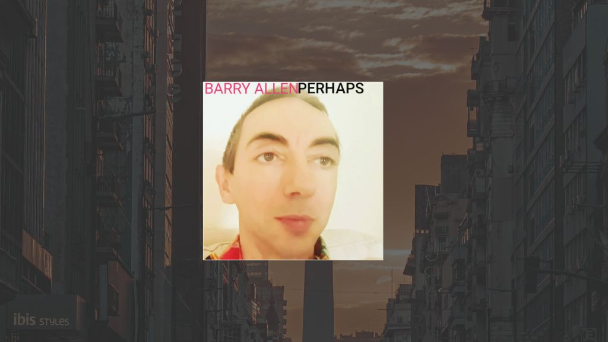

Quiet Rooms and Open Hearts: Barry Allen and the Weight of Perhaps

The following feature is now included as a full article in our online magazine which is also available in print.
Issue #10
Online Magazine | Print MagazineThere is a particular kind of honesty that only shows up when an artist stops trying to impress and starts trying to tell the truth. Barry Allen’s album Perhaps lives in that space. Released in the spring of 2021, it is a record shaped by reflection, patience, and a willingness to sit with difficult feelings rather than dress them up. It does not announce itself loudly. It earns your attention by being sincere.
Barry Allen is a singer songwriter and guitarist from London, based in Streatham Hill, whose work leans toward folk but never feels boxed in by it. Perhaps came together during a charged and reflective period in his life, and you can hear that context in every track. These songs feel written at close range, as if the listener has been invited into the room rather than placed at a safe distance. The emotional tone is personal, but never closed off. It reaches outward, trusting that others will recognize themselves somewhere in the lines.
The influence of writers like Joni Mitchell is easy to hear, not in imitation but in approach. Barry shares her interest in emotional clarity and melodic honesty. There is also a trace of Roy Orbison’s sense of vulnerability, that willingness to let feeling lead without irony or defense. These are songs that accept tenderness as strength. They do not hide behind metaphor when plain language will do the job better.
Perhaps was recorded at the home studio of pianist Mike Cliffe in Chessington. The two met at the YMCA, a detail that feels fitting given the album’s grounded, human scale. Mike’s classical background adds depth to the arrangements without pulling them away from their folk core. Piano lines drift in gently, offering support rather than spotlight. The production keeps things close and natural. You can hear fingers on strings, breath between phrases, the quiet moments that often get edited out elsewhere.
Tracks like Stay and In The Darkness carry much of the album’s emotional center. Stay feels like a conversation that has been rehearsed too many times in one’s head before finally being spoken aloud. In The Darkness leans into solitude without glamorizing it, allowing the song to move slowly and honestly. These are not dramatic performances. They are calm admissions, delivered with care.
What makes Perhaps stand out in Barry Allen’s catalog is its consistency of mood and purpose. Each song feels connected, part of the same emotional landscape. There is no rush to vary tone for the sake of variety. Instead, the album trusts its own voice. It understands that intimacy can be compelling when it is handled with restraint.
In a broader sense, the record fits alongside albums that value songwriting as craft rather than spectacle. Fans of quieter folk records from artists like Nick Drake, early Leonard Cohen, or more recent releases from Laura Marling will find familiar ground here. There is also a cinematic quality to the pacing, the way songs unfold without hurry, recalling films that focus on interior lives rather than plot twists. These are songs for late evenings, for listening without distraction.
Barry Allen does not present himself as a performer chasing attention. He comes across as someone committed to making sense of experience through music, and inviting others to do the same. Perhaps feels like a snapshot of a moment when writing songs was less about ambition and more about necessity.
For listeners who value emotional openness, careful melodies, and records that reward time spent with them, Perhaps is worth returning to. It does not ask for much. It simply asks you to listen closely, and to be honest with yourself while you do.
This dispatch was last updated on January 19, 2026